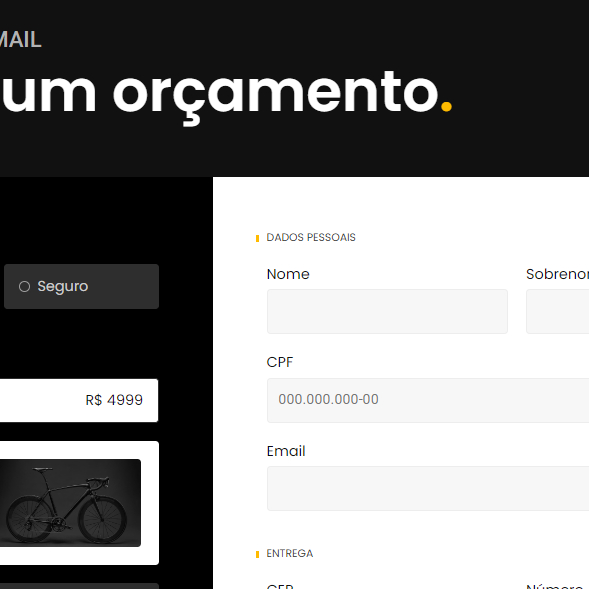

Bikcraft
A Bikcraft é um site fictício de Comércio de Bicicletas. Foi desenvolvido durante meu aprendizado no curso de HTML e CSS da Origamid. Foi fundamental para a fixação do meu conhecimento nessas tecnologias, principalmente compreender da melhor forma como essas tecnologias interagem entre si.

Jogo da Velha
Projeto desenvolvido por mim, com base em um Tutorial do Youtube. Essencial para exercitar a lógica de programação e o desenvolvimento utilizando JavaScript.